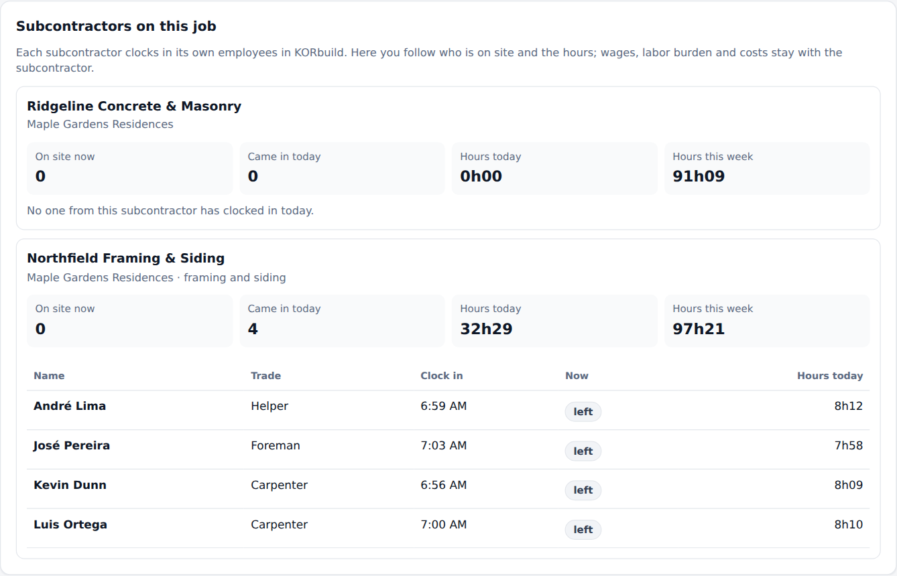

KORbuild is sold as a subscription (SaaS). Each customer is a company with its own account, its own people and its own data. This page explains who the customers are, who registers what, and what each company can see of the others. Read it before the presenter's guide: every screen in the demo follows these rules.
Two kinds of customer
| Customer | In the US market | What it does in KORbuild |
|---|---|---|
| General contractor (GC) | General contractor | Manages the jobs. It registers the jobs, links its subcontractors to them and follows everything they do. It does not fill out daily reports or clock anyone in. |
| Subcontractor | Trade contractor (concrete, framing, siding, drywall…) | Does the work. It keeps the daily report, the crew time clock and the schedule of its own work, measures plans and sends proposals. |
A subcontractor can be a customer on its own, without any general contractor: for example, a siding company hired directly by a homeowner, or working for a general contractor that does not use KORbuild.
Who registers what
General contractor
├── Its own employees ............ registered and managed by the general contractor
└── Subcontractors (any number)
└── Their employees ........... registered and managed by each subcontractor
| The general contractor registers | The subcontractor registers |
|---|---|
| Its subcontractors | The schedule of its work on each job |
| Its own employees (management: engineers, project managers, office) | Its own employees and crews (hourly rates, burden, certifications) |
| Jobs, and which subcontractors work on each one | Daily reports (Daily) |
| Access roles for its people | Time clock and labor cost (Crew) |
| Settings: company, jobs, contacts, users | Takeoffs and proposals (Measure) |
| Settings: company, users, labor burden, work rules, contacts | |
| Its own jobs, when it works directly for an owner |
Each company manages its own people
A general contractor never sees or edits a subcontractor's employee records, and a subcontractor never sees another company's. On every employee record, Company (employer) shows the account the employee belongs to.
What each company sees of the others
When a subcontractor is hired, it links its own job to the general contractor's job. From then on:
| What | The subcontractor | The general contractor |
|---|---|---|
| Daily reports | Fills out and submits them | Approves them (or requests changes) and shares them with the owner |
| People on site | Clocks them in and out | Sees names, trade, time in, who is on site now and hours |
| Wages, labor burden, labor cost | Sees everything | Never sees them |
| Schedule | Builds it and publishes versions | Sees the published versions, read-only |
On a job that the subcontractor has directly with the owner (no general contractor), the subcontractor approves its own daily reports.
What to say
"Each company keeps its own house in order — its people, its pay, its costs. The general contractor sees what matters to run the job: who is on site, how many hours, what was done every day — and approves the reports. What a sub pays its people stays with the sub."
The companies in the demo
| Company | Kind | People you can sign in as |
|---|---|---|
| Example Builders | General contractor (manages, does not do the work) | Ana Ribeiro (Admin) |
| Ridgeline Concrete & Masonry | Subcontractor: structure, masonry and floors on the three jobs of Example Builders | Sandra Lopes (Admin), Carlos Mendes (Foreman), Diego Santos (Worker) |
| Northfield Framing & Siding | Subcontractor: framing and siding at Maple Gardens Residences, plus a homeowner job of its own (Thompson residence) | Tom Reilly (Admin), Rita Gomes (Project manager), José Pereira (Foreman), Luis Ortega (Worker) |

In the prototype
The three companies live in the same browser, so you can sign in as each of them in turn. In the product, each company has its own account on the server, and the general contractor receives only what the rules above allow.
To be confirmed
- How a general contractor invites a subcontractor and how the jobs get linked (today they come linked in the sample data). This comes with the bidding feature and the database.
- Whether a subcontractor can choose to share less (for example, hours without names).